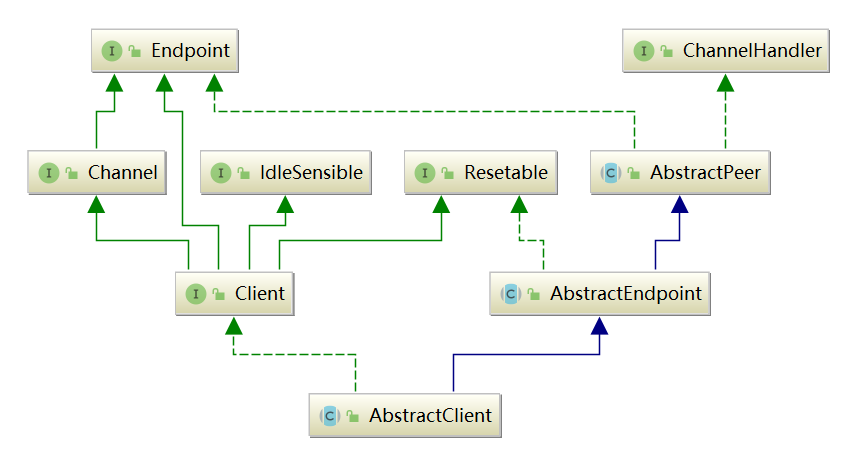
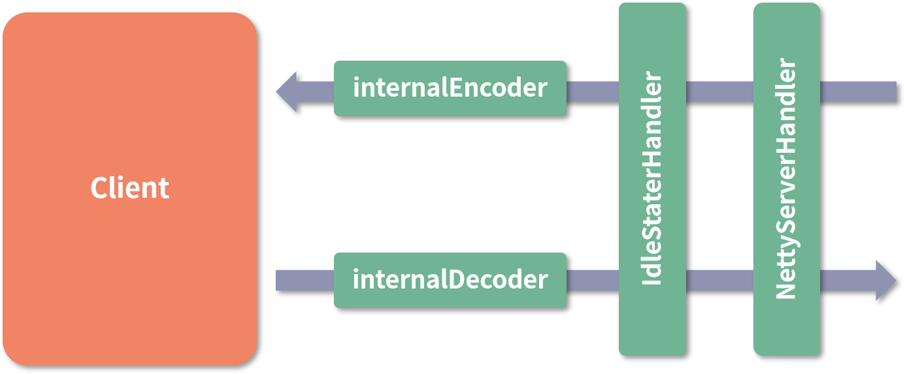
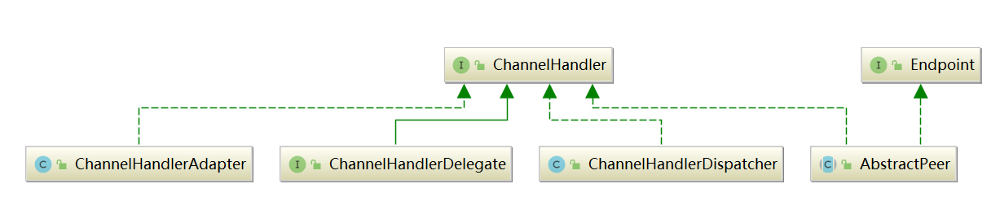
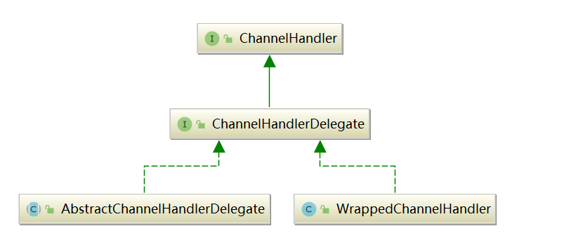
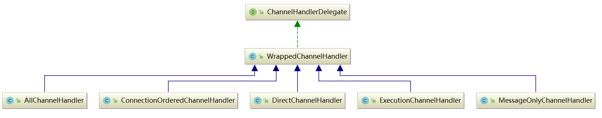
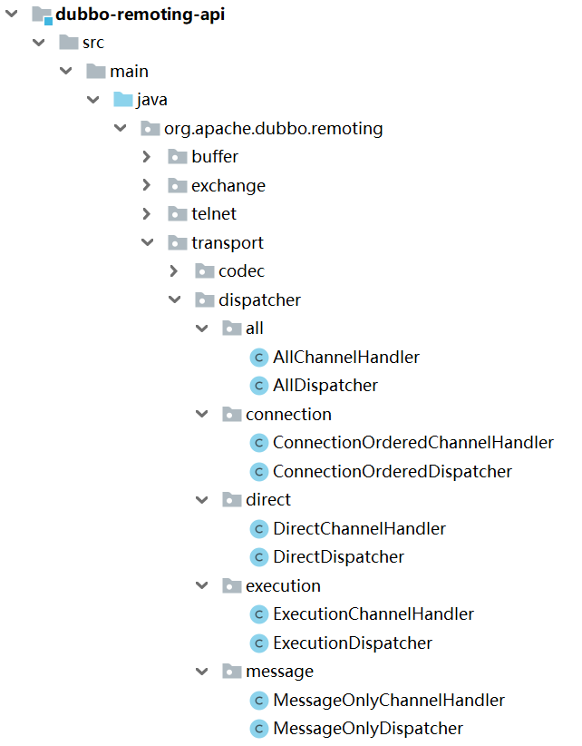
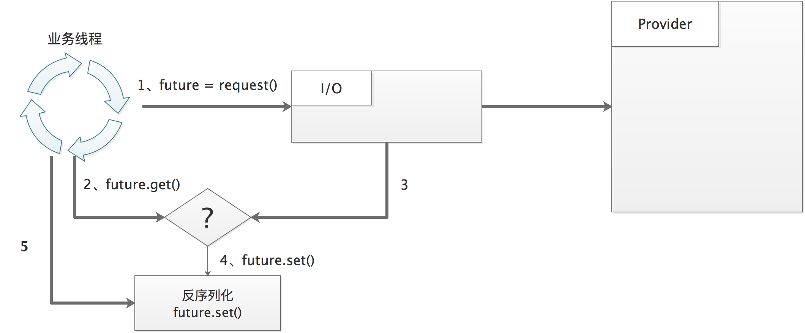

透彻理解Apache Dubbo（十一）——dubbo-remoting模块：Transport层的Client核心实现
上一章，我对dubbo-remoting模块 Transport 层中的 Server 相关的核心抽象类以及基于 Netty 4 的实现类进行了分析。本章，我继续分析 Transport 层中的剩余核心接口及实现，主要涉及 Client 接口、ChannelHandler 接口，以及相关的核心组件。
一、AbstractClient
AbstractClient，是对客户端的抽象，和AbstractServer一样，继承自AbstractEndpoint抽象类：

1.1 核心字段
AbstractClient 中的核心字段如下：
public abstract class AbstractClient extends AbstractEndpoint implements Client {
protected static final String CLIENT_THREAD_POOL_NAME = "DubboClientHandler";
// Client底层进行连接、断开、重连等操作时，需要先获取锁
private final Lock connectLock = new ReentrantLock();
// 发送数据前，会检查Client底层的连接是否断开，如果已断开，则根据needReconnect字段决定是否重连
private final boolean needReconnect;
// 当前Client关联的线程池
protected volatile ExecutorService executor;
private ExecutorRepository executorRepository = ExtensionLoader.getExtensionLoader(ExecutorRepository.class).getDefaultExtension();
}
线程池的具体内容，我在上一章已经详细介绍过了，本章不再赘述。
1.2 构造
AbstractClient 在构造时，会解析 URL 并根据参数值初始化 needReconnect 字段和 executor 字段：
// AbstractClient.java
public AbstractClient(URL url, ChannelHandler handler) throws RemotingException {
super(url, handler);
// 是否重连
needReconnect = url.getParameter(Constants.SEND_RECONNECT_KEY, false);
// 初始化线程池
initExecutor(url);
try {
// // 初始化底层的NIO库的相关组件，抽象方法，由子类实现
doOpen();
} catch (Throwable t) {
close();
throw new RemotingException(url.toInetSocketAddress(), null,
"Failed to start " + getClass().getSimpleName() + " " + NetUtils.getLocalAddress() + " connect to the server " + getRemoteAddress() + ", cause: " + t.getMessage(), t);
}
try {
// 与客户端建立连接
connect();
} catch (RemotingException t) {
if (url.getParameter(Constants.CHECK_KEY, true)) {
// 关闭连接
close();
throw t;
} else {
//...
}
} catch (Throwable t) {
close();
throw new RemotingException(url.toInetSocketAddress(), null,
"Failed to start " + getClass().getSimpleName() + " " + NetUtils.getLocalAddress() + " connect to the server " + getRemoteAddress() + ", cause: " + t.getMessage(), t);
}
}
protected void connect() throws RemotingException {
connectLock.lock();
try {
if (isConnected()) {
return;
}
// 抽象方法，由子类实现
doConnect();
if (!isConnected()) {
// ...省略抛出异常
} else {
// ...省略日志
}
} catch (RemotingException e) {
throw e;
} catch (Throwable e) {
throw new RemotingException(this, "Failed connect to server " + getRemoteAddress() + " from " + getClass().getSimpleName() + " " + NetUtils.getLocalHost() + " using dubbo version " + Version.getVersion()
+ ", cause: " + e.getMessage(), e);
} finally {
connectLock.unlock();
}
}
//...
与 AbstractServer 类似，AbstractClient 定义了 doOpen()、doClose()、doConnect()和 doDisConnect() 四个抽象方法给子类实现。NettyClient的子类继承图如下：

二、NettyClient
本节，我基于NettyClient的子类——NettyClient，对上述AbstractClient的抽象方法的实现进行分析，它的底层其实封装了Netty4的API。
2.1 doOpen
NettyClient 的 doOpen() 方法，内部基于Netty的 Bootstrap 构建客户端，其中会完成连接超时时间、keepalive 等参数的设置，以及 ChannelHandler 的创建和注册：
// NettyClient.java
public class NettyClient extends AbstractClient {
// Netty线程池
private static final EventLoopGroup NIO_EVENT_LOOP_GROUP = eventLoopGroup(Constants.DEFAULT_IO_THREADS, "NettyClientWorker");
private static final String SOCKS_PROXY_HOST = "socksProxyHost";
private static final String SOCKS_PROXY_PORT = "socksProxyPort";
private static final String DEFAULT_SOCKS_PROXY_PORT = "1080";
// 客户端Netty Bootstrap
private Bootstrap bootstrap;
// 当前与Server建立的Netty Channel连接
private volatile Channel channel;
protected void doOpen() throws Throwable {
// 创建一个NettyClientHandler对象
final NettyClientHandler nettyClientHandler = new NettyClientHandler(getUrl(), this);
// 创建并装配Bootstrap
bootstrap = new Bootstrap();
bootstrap.group(NIO_EVENT_LOOP_GROUP)
.option(ChannelOption.SO_KEEPALIVE, true)
.option(ChannelOption.TCP_NODELAY, true)
.option(ChannelOption.ALLOCATOR, PooledByteBufAllocator.DEFAULT)
.channel(socketChannelClass());
// 设置连接超时时间，这里使用到AbstractEndpoint中的connectTimeout字段
bootstrap.option(ChannelOption.CONNECT_TIMEOUT_MILLIS, Math.max(3000, getConnectTimeout()));
bootstrap.handler(new ChannelInitializer<SocketChannel>() {
@Override
protected void initChannel(SocketChannel ch) throws Exception {
// 心跳请求的时间间隔
int heartbeatInterval = UrlUtils.getHeartbeat(getUrl());
if (getUrl().getParameter(SSL_ENABLED_KEY, false)) {
ch.pipeline().addLast("negotiation", SslHandlerInitializer.sslClientHandler(getUrl(), nettyClientHandler));
}
// 通过NettyCodecAdapter创建Netty中的编解码器
NettyCodecAdapter adapter = new NettyCodecAdapter(getCodec(), getUrl(), NettyClient.this);
ch.pipeline()
.addLast("decoder", adapter.getDecoder())
.addLast("encoder", adapter.getEncoder())
.addLast("client-idle-handler", new IdleStateHandler(heartbeatInterval, 0, 0, MILLISECONDS))
.addLast("handler", nettyClientHandler);
// 如果需要Socks5Proxy，则添加Socks5ProxyHandler
String socksProxyHost = ConfigUtils.getProperty(SOCKS_PROXY_HOST);
if(socksProxyHost != null) {
int socksProxyPort = Integer.parseInt(ConfigUtils.getProperty(SOCKS_PROXY_PORT, DEFAULT_SOCKS_PROXY_PORT));
Socks5ProxyHandler socks5ProxyHandler = new Socks5ProxyHandler(new InetSocketAddress(socksProxyHost, socksProxyPort));
ch.pipeline().addFirst(socks5ProxyHandler);
}
}
});
}
}
doOpen执行完成后，得到的 NettyClient 结构如下图所示：

NettyClientHandler 的实现方法与上一章介绍的 NettyServerHandler 类似，同样是实现了 Netty 中的
ChannelDuplexHandler，内部会将所有方法委托给与 NettyClient 关联的 ChannelHandler 对象进行处理。
三、ChannelHandler
我在前面章节介绍的 AbstractServer、AbstractClient 以及 Channel 实现，都是通过 AbstractPeer 实现了 ChannelHandler 接口，但只是做了一层简单的委托，将全部方法委托给了其底层关联的 ChannelHandler 对象。本节，我就对 ChannelHandler 的其他实现类进行分析。
3.1 继承体系
ChannelHandler的类继承结构如下图：

- ChannelHandlerDispatcher：我在前面章节已经介绍过了，它负责将多个 ChannelHandler 对象聚合在一起；
- ChannelHandlerAdapter：是一个适配器类，实现了ChannelHandler接口的所有方法，但都是空实现；
- ChannelHandlerDelegate：是对另一个 ChannelHandler 对象的封装，它的两个实现类 AbstractChannelHandlerDelegate 和 WrappedChannelHandler 中也仅仅是在内部封装了另一个 ChannelHandler 对象。
3.2 ChannelHandlerDelegate
我们重点关注ChannelHandlerDelegate，它的两个实现类 AbstractChannelHandlerDelegate 和 WrappedChannelHandler 仅仅是在内部封装了另一个 ChannelHandler 对象。

AbstractChannelHandlerDelegate
AbstractChannelHandlerDelegate，本质是装饰器模式的应用，它在内部的 ChannelHandler 的基础上添加了一些增强功能，有三个实现类：
- DecodeHandler：专门处理 Decodeable 的 ChannelHandler 实现。实现了 Decodeable 接口的类都会覆写 decode() 方法实现对自身的解码，DecodeHandler.received() 方法就是通过该方法得到解码后的消息，然后传递给底层的 ChannelHandler 对象继续处理。
- HeartbeatHandler：专门处理心跳消息的 ChannelHandler 实现。HeartbeatHandler.received() 方法接收心跳请求时，会生成相应的心跳响应并返回；在收到心跳响应时，会打印相应的日志；在收到其他类型的消息时，会传递给底层的 ChannelHandler 对象进行处理；
- MultiMessageHandler：专门处理 MultiMessage 的 ChannelHandler 实现。MultiMessage 是 Exchange 层的一种消息类型，它内部封装了多个消息。MultiMessageHandler 收到 MultiMessage 消息时，会遍历其中的所有消息，并交给底层的 ChannelHandler 对象进行处理。
WrappedChannelHandler
ChannelHandlerDelegate 接口的另一条继承线——WrappedChannelHandler，其子类决定了 Dubbo 以何种线程模型处理收到的事件和消息，就是所谓的消息派发机制。
WrappedChannelHandler 的实现类如下图：

上述这些实现类，每一个都对应一个Dispatcher实现类：

- AllChannelHandler：将所有网络事件以及消息交给关联的线程池进行处理；
- DirectChannelHandler：将所有的消息和网络事件交给 IO 线程处理；
- MessageOnlyChannelHandler：将所有消息提交到线程池处理，而网络事件则由 IO 线程直接处理；
- ConnectionOrderedChannelHandler ：将所有消息交给线程池处理，对于连接建立和断开事件，则会提交到一个独立的线程池中排队处理。
下面是 Dispatcher 接口的定义，可以看到这是一个 SPI 扩展点接口，默认实现是AllDispatcher：
JAVA
@SPI(AllDispatcher.NAME)
public interface Dispatcher {
@Adaptive({Constants.DISPATCHER_KEY, "dispather", "channel.handler"})
ChannelHandler dispatch(ChannelHandler handler, URL url);
}##### AllDispatcher
AllDispatcher 创建的是 AllChannelHandler 对象，它会将所有网络事件以及消息交给关联的线程池进行处理。AllChannelHandler覆盖了 WrappedChannelHandler 中除了 sent() 方法之外的其它网络事件处理方法，将调用内部 ChannelHandler 的逻辑放到线程池中执行。以
connected() 方法和 receive() 方法为例：JAVA
// AllChannelHandler.java
public class AllChannelHandler extends WrappedChannelHandler {
@Override
public void connected(Channel channel) throws RemotingException {
// 按照当前端点（Server/Client）的 URL 从 ExecutorRepository 中获取相应的公共线程池
ExecutorService executor = getExecutorService();
try {
// 将CONNECTED事件的处理封装成ChannelEventRunnable提交到线程池中执行
executor.execute(new ChannelEventRunnable(channel, handler, ChannelState.CONNECTED));
} catch (Throwable t) {
throw new ExecutionException("connect event", channel, getClass() + " error when process connected event .", t);
}
}
@Override
public void received(Channel channel, Object message) throws RemotingException {
// 获取线程池
ExecutorService executor = getPreferredExecutorService(message);
try {
// 将消息封装成ChannelEventRunnable任务，提交到线程池中执行
executor.execute(new ChannelEventRunnable(channel, handler, ChannelState.RECEIVED, message));
} catch (Throwable t) { // 如果线程池满了，请求会被拒绝
// 根据请求配置决定是否返回一个说明性的响应
if(message instanceof Request && t instanceof RejectedExecutionException){
sendFeedback(channel, (Request) message, t);
return;
}
throw new ExecutionException(message, channel, getClass() + " error when process received event .", t);
}
}
}> 注意：AllChannelHandler 并没有覆盖父类的 sent() 方法，也就是说，发送消息是直接在当前线程调用 sent() 方法完成的。
##### ConnectionOrderedDispatcher
ConnectionOrderedDispatcher 创建的是 ConnectionOrderedChannelHandler 对象， 它会将所有消息交给线程池处理，对于连接建立和断开事件，则会提交到一个独立的线程池中排队处理。
在 ConnectionOrderedChannelHandler 的构造方法中，会初始化一个线程池，该线程池的队列长度是固定的：
JAVA
// ConnectionOrderedChannelHandler.java
public class ConnectionOrderedChannelHandler extends WrappedChannelHandler {
protected final ThreadPoolExecutor connectionExecutor;
private final int queuewarninglimit;
public ConnectionOrderedChannelHandler(ChannelHandler handler, URL url) {
super(handler, url);
String threadName = url.getParameter(THREAD_NAME_KEY, DEFAULT_THREAD_NAME);
// 该线程池只有一个线程，队列的长度也是固定的，由URL中的connect.queue.capacity参数指定
connectionExecutor = new ThreadPoolExecutor(1, 1,
0L, TimeUnit.MILLISECONDS,
new LinkedBlockingQueue<Runnable>(url.getPositiveParameter(CONNECT_QUEUE_CAPACITY, Integer.MAX_VALUE)),
new NamedThreadFactory(threadName, true),
new AbortPolicyWithReport(threadName, url)
); // FIXME There's no place to release connectionExecutor!
queuewarninglimit = url.getParameter(CONNECT_QUEUE_WARNING_SIZE, DEFAULT_CONNECT_QUEUE_WARNING_SIZE);
}
//...
}在 ConnectionOrderedChannelHandler 的 connected() 方法和 disconnected() 方法实现中，会将连接建立和断开事件交给上述
connectionExecutor 线程池排队处理：JAVA
// ConnectionOrderedChannelHandler.java
@Override
public void connected(Channel channel) throws RemotingException {
try {
checkQueueLength();
connectionExecutor.execute(new ChannelEventRunnable(channel, handler, ChannelState.CONNECTED));
} catch (Throwable t) {
throw new ExecutionException("connect event", channel, getClass() + " error when process connected event .", t);
}
}
@Override
public void disconnected(Channel channel) throws RemotingException {
try {
checkQueueLength();
connectionExecutor.execute(new ChannelEventRunnable(channel, handler, ChannelState.DISCONNECTED));
} catch (Throwable t) {
throw new ExecutionException("disconnected event", channel, getClass() + " error when process disconnected event .", t);
}
}
private void checkQueueLength() {
// 检查队列容量
if (connectionExecutor.getQueue().size() > queuewarninglimit) {
logger.warn(new IllegalThreadStateException("connectionordered channel handler `queue size: " + connectionExecutor.getQueue().size() + " exceed the warning limit number :" + queuewarninglimit));
}
}#### ThreadlessExecutor
在上面介绍 WrappedChannelHandler 各个实现的时候，我们会看到其中有针对 ThreadlessExecutor 这种线程池类型的特殊处理，例如，ExecutionChannelHandler.received() 方法中就有如下的分支逻辑：
JAVA
// ExecutionChannelHandler.java
public class ExecutionChannelHandler extends WrappedChannelHandler {
@Override
public void received(Channel channel, Object message) throws RemotingException {
// 获取线程池（请求绑定的线程池或是公共线程池）
ExecutorService executor = getPreferredExecutorService(message);
// 请求消息直接提交给线程池处理
if (message instanceof Request) {
try {
executor.execute(new ChannelEventRunnable(channel, handler, ChannelState.RECEIVED, message));
} catch (Throwable t) {
//...
}
}
// 针对ThreadlessExecutor这种线程池类型的特殊处理
else if (executor instanceof ThreadlessExecutor) {
executor.execute(new ChannelEventRunnable(channel, handler, ChannelState.RECEIVED, message));
} else {
handler.received(channel, message);
}
}
}ThreadlessExecutor 是一种特殊类型的线程池，与其他正常的线程池最主要的区别是：ThreadlessExecutor 内部不管理任何线程。
我们可以调用 ThreadlessExecutor 的execute() 方法，将任务提交给这个线程池，但是这些提交的任务不会被调度到任何线程执行，而是存储在阻塞队列中，只有当其他线程调用 ThreadlessExecutor.waitAndDrain() 方法时才会真正执行。也说就是，执行任务的与调用 waitAndDrain() 方法的是同一个线程。
那为什么会有 ThreadlessExecutor 这个实现呢？这主要是因为在
Dubbo 2.7.5 版本之前，没有 ExecutorRepository 的概念，不会根据 URL 复用同一个线程池，而是通过 SPI 找到 ThreadPool 实现并创建新线程池，也就是说会为每个连接启动一个线程池。当面临需要消费大量服务且并发数比较大的场景时，例如，网关类场景，可能会导致 Consumer 端线程个数不断增加，导致线程调度消耗过多 CPU ，也可能因为线程创建过多而导致 OOM。为了解决上述问题，Dubbo 在 2.7.5 版本之后，引入了 ThreadlessExecutor，线程模型如下图：

- 业务线程发出请求之后，拿到一个 Future 对象，然后调用
ThreadlessExecutor.waitAndDrain()方法，在阻塞队列上等待； - 当收到响应时，IO 线程会生成一个任务，并入队到 ThreadlessExecutor 队列中；
- 业务线程会将队列任务取出，并在本线程中执行，得到业务结果后，再调用 Future.set() 方法进行设置，然后 waitAndDrain() 方法返回；
- 最后，业务线程从 Future 中拿到结果值。
了解了 ThreadlessExecutor 出现的缘由之后，接下来我们再深入了解一下 ThreadlessExecutor 的核心实现：
public class ThreadlessExecutor extends AbstractExecutorService {
// 阻塞队列，用来在 IO 线程和业务线程之间传递任务
private final BlockingQueue<Runnable> queue = new LinkedBlockingQueue<>();
// 共享线程池，当业务线程已经不再等待响应时，会由该线程池执行提交的任务
private ExecutorService sharedExecutor;
// 指向请求对应的 DefaultFuture 对象
private CompletableFuture<?> waitingFuture;
// ThreadlessExecutor.waitAndDrain() 一般与一次 RPC 调用绑定，只会执行一次
// 当后续再次调用 waitAndDrain() 时，会检查 finished 字段，若为true，则此次调用直接返回
private boolean finished = false;
// 当后续再次调用 execute() 方法提交任务时，会根据 waiting 字段决定任务是放入 queue 队列等待业务线程执行，还是直接由 sharedExecutor 线程池执行
private volatile boolean waiting = true;
private final Object lock = new Object();
}
ThreadlessExecutor 的核心逻辑在 execute() 方法和 waitAndDrain() 方法：
// ThreadlessExecutor.java
@Override
public void execute(Runnable runnable) {
// 根据 waiting 状态决定任务提交到哪里
synchronized (lock) {
if (!waiting) {
sharedExecutor.execute(runnable);
} else {
queue.add(runnable);
}
}
}
public void waitAndDrain() throws InterruptedException {
if (finished) {
return;
}
// 从阻塞队列中获取任务
Runnable runnable = queue.take();
synchronized (lock) {
waiting = false;
// 同步执行任务
runnable.run();
}
// 如果阻塞队列中还有其他任务，也需要一并执行
runnable = queue.poll();
while (runnable != null) {
try {
runnable.run();
} catch (Throwable t) {
logger.info(t);
}
runnable = queue.poll();
}
finished = true;
}
四、总结
本章，我对 dubbo-remoting模块的子层 Dubbo Transport ，其中的 Client、 ChannelHandler 接口及实现进行了介绍。ChannelHandler 的WrappedChannelHandler实现，其子类决定了 Dubbo 以何种线程模型处理收到的事件和消息，这是本章的核心。